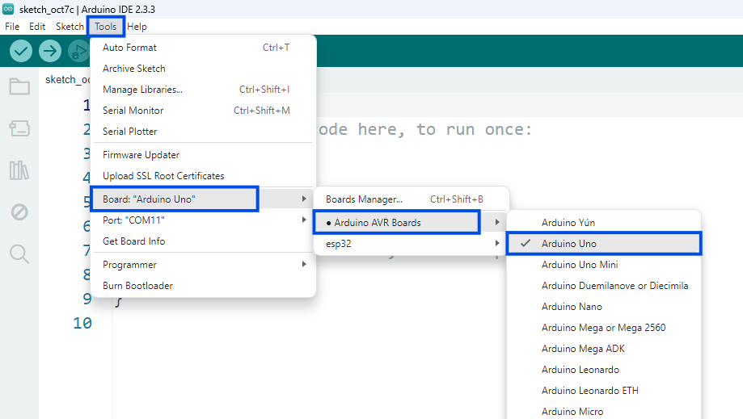
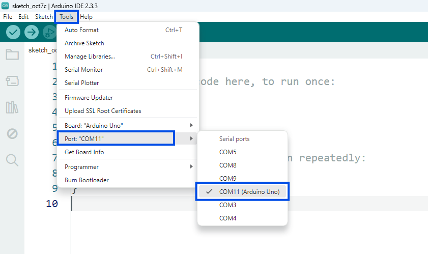

Setup Device Hardware & Interaksi Serial Monitor
Pelajari tahapan menghubungkan papan Arduino Uno ke PC, mengonfigurasi port & board pada Arduino IDE, serta menguji eksekusi program Serial.print() dan Serial.println() dengan Simulator Interaktif.
Langkah-Langkah Menghubungkan Device Arduino
Wajib DilakukanSiapkan kabel USB dan Board Arduino Uno milikmu.
Hubungkan Arduino Board dengan kabel ke Serial Port USB pada PC/Laptop.
Jalankan Software Arduino IDE pada komputer kamu.
Memilih Board Arduino Uno
Pilih board yang terhubung ke papan Arduino melalui menu "Tools" > "Board" > "Arduino AVR Boards" > "Arduino Uno".

Memilih Port Serial Arduino
Pilih port serial yang terhubung ke papan Arduino Anda melalui menu "Tools" > "Port" (Contoh: COM11 atau port yang terdeteksi).
